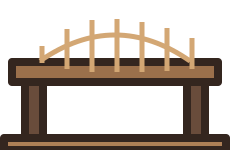
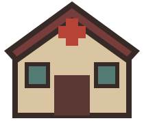
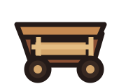
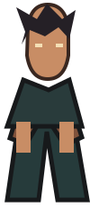
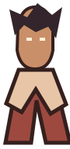
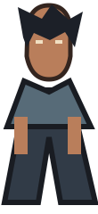

حمولة واحدة
الفصل 27 — تجربة بصرية مستقلة، خارج مسار اللعبة وحفظها.






اختار شنوّة يصير للحمولة في التجربة فقط:
الفصل 27 — تجربة بصرية مستقلة، خارج مسار اللعبة وحفظها.






اختار شنوّة يصير للحمولة في التجربة فقط: